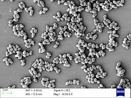
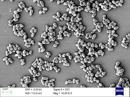

- C.glutamicum
- E.coli
- S.cerevisiae
Corynebacterium glutamicum (previously known as Micrococcus glutamicus) is a Gram-positive, rod-shaped bacterium that is used industrially for large-scale production of amino acids.
 

Corynebacterium glutamicum (previously known as Micrococcus glutamicus)[1] is a Gram-positive, rod-shaped bacterium that is used industrially for large-scale production of amino acids.[2] While originally identified in a screen for organisms secreting L-glutamate, mutants of C. glutamicum have also been identified that produce various other amino acids.[3]
Due to its industrial importance, several clones of C. glutamicum have been sequenced by both industry and academic groups.[2] Furthermore, small RNA data was obtained by RNA-Seq in C. glutamicum ATCC 13032.[4]